RegionalRubyKaigi レポート (57) 大江戸 Ruby 会議 05
大江戸 Ruby 会議 05
2015 年 11 月 08 日 (日) に大江戸 Ruby 会議 05 が開催されました。合計 228 名の方々に参加いただきました。
- 日時: 2015/11/08 (日)
- 場所: コンベンションルーム AP 東京八重洲通り 7 階
- 公式サイト: http://regional.rubykaigi.org/oedo05/
- 公式タグ: #oedo05
- 主催: Asakusa.rb
はじめに
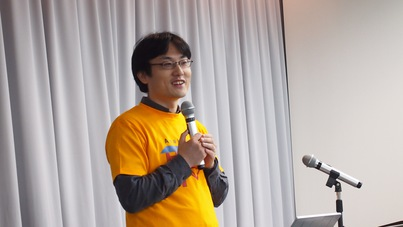
毎年大人気である大江戸 Ruby 会議。この記事では、その第五回である大江戸 Ruby 会議 05 の様子について、レポートします1。
長年 Ruby コミッタとして活躍されている、なかむら(う)さんによる基調講演から始まり、発表者全員 Ruby のコミッタで行われた LT、お馴染みになってきた最近 Asakusa.rb で活動している人達が繰り広げる NinjaTalk、そして実はこの会議の公式アカウント(@oedorubykaigi)を担当していた江渡浩一郎さんによる特別講演と、大江戸 Ruby 会議だからこそ実現できる盛り沢山な内容でした。
Keynote
あいおーのはなし

- 発表者
- なかむら (う) さん
- スライド
エモい話ではなくテッキーな話を依頼された、というなかむら（う）さんは、Ruby の IO について基調講演を行いました。Ruby 1.9 から POSIX I/O ベースになり利便性があがったものの、Windows での対応にとても苦労が多いとのこと。今後の提案を「ぼくのかんがえたさいきょうのあいおーじっそうあん」と題して、Perl の I/O 実装を参考にした RubyIO （仮称）の提案をし、2.3 の次のバージョンへの導入を目指すと意気込みを語ってくれました。Ruby の深い部分を、軽快な小ネタを挟みながらわかりやすく解説していました。
Ruby Committers’ Lightning Talks
まずは LT から開始しました。 LT の順番は、Array#shuffle で直前に決められており、 プログラムにある順番ではないのですが、ここではプログラムの順番でご紹介します。
The Kaigi Must Go On

- 発表者
- 松田明さん
- スライド
mruby で mackerel のプラグインを作るはなし
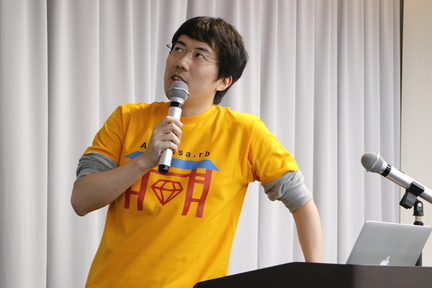
- 発表者
- 柴田博志さん
- スライド
Best Commits of the year 2015

- 発表者
- 中田伸悦さん
- スライド
TODO
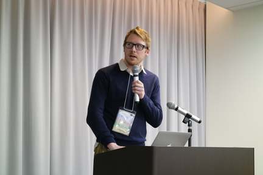
- 発表者
- Zachary Scott さん
- スライド非公開
超簡単! 英語でバグレポート
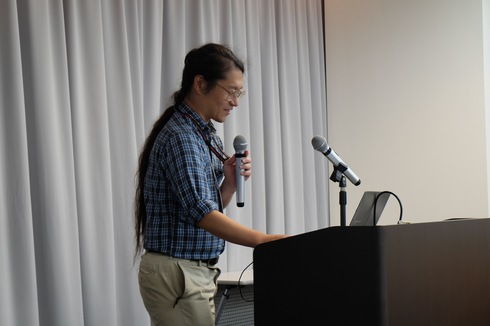
Information Security Programming in Ruby

- 発表者
- なひさん
- スライド
Go で拡張ライブラリを書くはなし
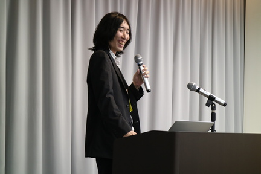
- 発表者
- 成瀬ゆいさん
- スライド
Re: Power Assert in Ruby
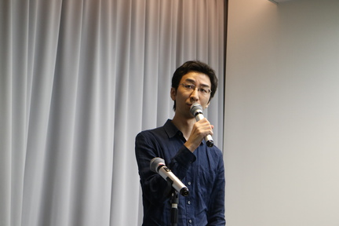
- 発表者
- 辻本和樹さん
- スライド
Ruby で実は writev(2)が使われているはなし

- 発表者
- 松下正樹さん
- スライド
超絶技巧プログラミングと Ruby 3.0
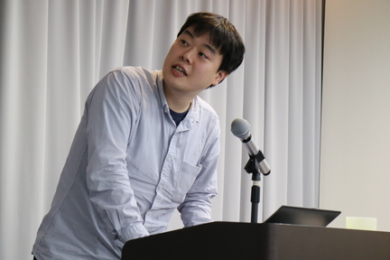
- 発表者
- 遠藤侑介さん
- スライド
Functional Music Composition
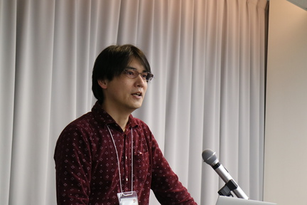
- 発表者
- 近永智之さん
- スライド
Ninja Talks 1
Asakusa.rb のメンバーによる Ninja Talk、その 1 グループ目です。
Rails on Two DBs

- 発表者
- 金子悠一郎さん
- スライド
Rails で複数のサービスを運営している時に、ユーザーテーブルなどを他のサービスから利用したい場合の対処方法についての発表でした。Rails のみで複数のデータベースを扱えるものの、複雑なアソシエーションがうまく動かないなど、Rails コントリビューターならではの突っ込んだ解説を聞けました。
強羅で温泉に浸かりながらカードゲームのルールエンジンについて考えてみた
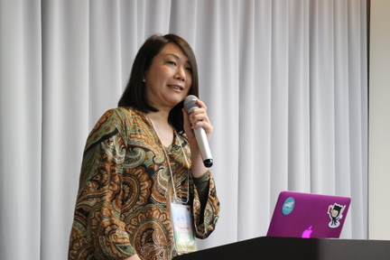
- 発表者
- 大崎瑶
- スライド
カードゲームのルールの解説し、それを Ruby で作成した DSL で表現する方法についての発表でした。最後に Slack をユーザーインターフェースにして大富豪が動くデモがありました。カードゲームの状態遷移の解説が興味深い話でした。
SQL 脳から見た Ruby
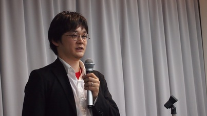
Rubyist であり、PostgreSQList でもある小栁さんは、 「SQL でできることのほとんどは Ruby でできる」という斬新な着想の元、 大変面白いアイデアの数々をご紹介してくれました。 架空のタクシー会社の料金を SQL で解いてみるなど、面白い実践例が聞けました。
詳解 Burn
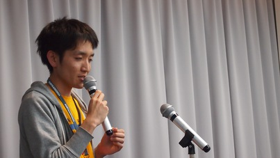
- 発表者
- Kei Sawada さん
- スライド
.nes アプリケーションを作るためのフレームワーク Burn を趣味で開発している Sawada さんは、 会場で DSL を使って音楽を奏でるというとても面白い発表をしてくれました。 Burn の開発は海外でも取り上げられ、台湾の Rubyist とも繋がることができたというとてもいいお話が聞けました。
Ninja Talks 2
Asakusa.rb のメンバーによる Ninja Talk、その 2 グループ目です。
「Ember コミュニティとわたし」
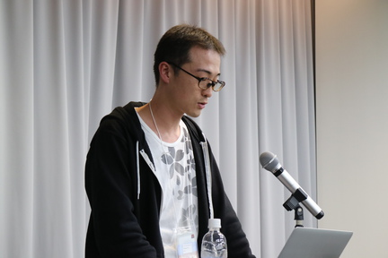
- 発表者
- 佐藤竜之介さん
- スライド
Ember.js コミュニティに焦点を当て 2 部構成で話してくれました。 1 部は「Ember.js の背景」創始者を筆頭にコミュニティ主導で開発するスタイルで、コンポーネントごとにエキスパートがいて、今後の展望は各々のブログで公開されているそうです。第 2 部の「Ember.js と私」は Ember.js への愛が溢れるお話でした。
「地獄のニューヨーク」
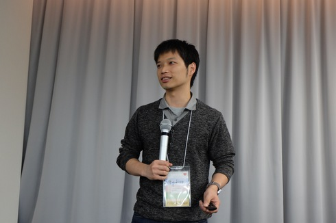
- 発表者
- 西嶋悠貴さん
- スライド非公開
ネット上で話題になった「恐怖、シリコンバレーの真実！！！」 を受けて、最近まで暮らしていたニューヨークでの話をしてくれました。 ある人には地獄、でも他の人にも地獄とは限らない。話の断片だけを見て結論を出すのは良くない、ということを話してくれました。質疑応答では Ruby カンファレンスらしからぬ海外の保険事情に関する質問が殺到しました。
And they lived happily ever after with ruby?

- 発表者
- 山崎大輔さん
- スライド非公開
デジタルマーケティングを支援するツールを開発している Supership 株式会社（旧 ScaleOut ）の山崎さんの発表です。山崎さんは Ruby な会社を立ち上げて買収されるまでのお話をしてくれました。 お話のなかで、エンジニアは自分で手を動かして作ることができるという利点がある、 起業の初期から投資などをうけることはプレッシャーにもなる、 だからエンジニアとしての立場を 生かしたビジネスのやりかたをするのが良いということを言われていたのがとても印象的でした。
WebSocket for Web Rubyists

- 発表者
- Mu-Fan Teng
- スライド
Rails で WebSocket を使用してアプリケーションを構築するための話をしてくれました。 WebSocket を使うための各種 gem、Rails 5 から追加される ActionCable それぞれの比較と、cookie/URL/header それぞれを利用した認証処理実装時の注意点について解説してくれたことが印象的でした。 Mu-Fan Teng さんは RubyConf Taiwan や Rails Girls Taipei の主催もしていて、台湾での Ruby の活動も紹介されていました。
Special Talk
共創コミュニティのデザイン
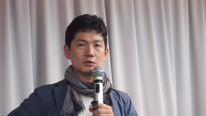
- 発表者
- 江渡浩一郎さん
- スライド非公開
特別講演の江渡浩一郎さんは、自身の経歴を踏まえて、これまでの活動を紹介してくれました。日本科学未来館の「インターネット物理モデル」の展示や、2002 年に開発した qwikWeb という Wiki とメーリングリストを融合したシステムを紹介しました。また、「パターン、Wiki、XP」を著し Wiki の良さを伝えるためその歴史的経緯を明らかにしたこと、いま携わっているニコニコ学会βなどを紹介し、その裏にあった意図を教えてくれました。質疑応答では、開発を終了してしまった qwikWeb はオーパーツのようだったが、思想を引き継いだツールはあるのかとの質問に、（今は亡き） Google Wave は良かったと思う、いまなら GitHub もいいのでは、と回答していました。
懇親会
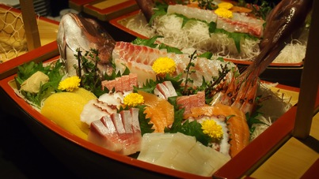
懇親会はメディアテクノロジーラボ様のご好意でリクルート本社ビルのラウンジにて行いました。100 名近い Rubyist たちと寿司、刺身、フルーツと美味しいお酒を堪能しました。akr さんの飛び入り LT が聞けました。
書いた人
- 白土慧（@kei_s）
- Ruby on Rails での EC サイト開発、システム運用を行っています。Web+DB PRESS 誌にて一年間 Ruby に関する連載を担当(共著)しました。好きな小説家は舞城王太郎。
- 高橋一生（@1syo）
- 2008 年頃から Ruby on Rails で仕事をしています。現在は EC サイトを Rails で開発しています。
- 寺嶋章子（@shokolateday）
- 昨年エンジニアになりました。普段は子育てしながら、リモートで働いています。
- 橋本諭（@sts_hsmt）
- 遅れてきた新人 Rails おじさん。現在は Rails での EC サイト開発に奮闘中。
- 深谷淳（@fukajun）
- EC サイトを Rails で開発しています。Ruby コミュニティ「Sendagaya.rb」の co-founder としてミートアップを開催中（毎週月曜日） 。お料理とワインが好きです。
-
この写真は実行委員長の笹田です。 ↩